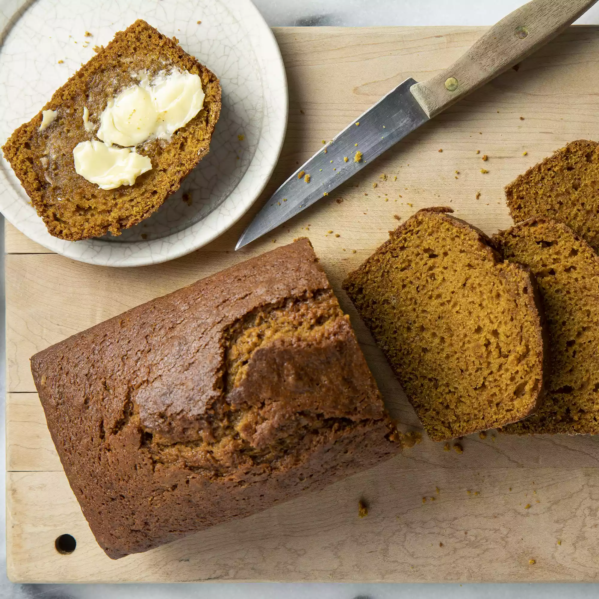

Pumpkin Bread

When fall is in the air, can't you just smell a delicious loaf of freshly baked pumpkin bread? Or is that just those of us who dream about pumpkin bread all day?
Ingredients
- 1 can pumpkin puree(15 oz)
- 4 eggs
- 1 cup oil
- 2/3 cup water
- 3 cups sugar
- 3 1/2 cups flour
- 2 tsp baking soda
- 1 1/2 tsp salt
- 1 tsp ground cinammon
- 1 tsp ground nutmeg
- 1/2 tsp ground cloves
- 1/4 tsp ground ginger
Steps
- Preheat oven to 350 degrees F (175 degrees C). Grease and flour two 9x5 inch loaf pans.
- In a large bowl, mix together pumpkin puree, eggs, oil, water and sugar until well blended. In a separate bowl, whisk together the flour, baking soda, salt, cinnamon, nutmeg, cloves and ginger. Stir the dry ingredients into the pumpkin mixture until just blended. Pour into the prepared pans.
- Bake for about 50 minutes in the preheated oven. Loaves are done when toothpick inserted in center comes out clean.
Storage
Wait until the bread is completely cool, then wrap it in plastic wrap or aluminum foil. Store it in a cool, dry place for up to four days, or in the refrigerator for up to one week.
Home